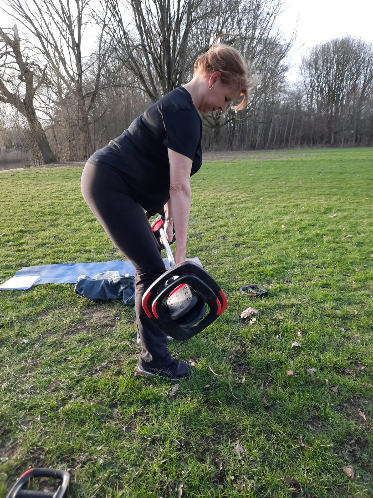

01
verstelbaar gewicht
Eén set verstelbare halters of twee kettlebells vervangen een heel rek. Van twee kilo voor schouderwerk tot twintig voor benen, zonder dat er meer dan een halve vierkante meter in beslag wordt genomen.
- doet
- Kracht in benen, rug, borst en schouders
- gaat mee
- Tientallen jaren, mits niet op tegels gegooid
Waard om zelf te kopen, maar pas na een week of acht